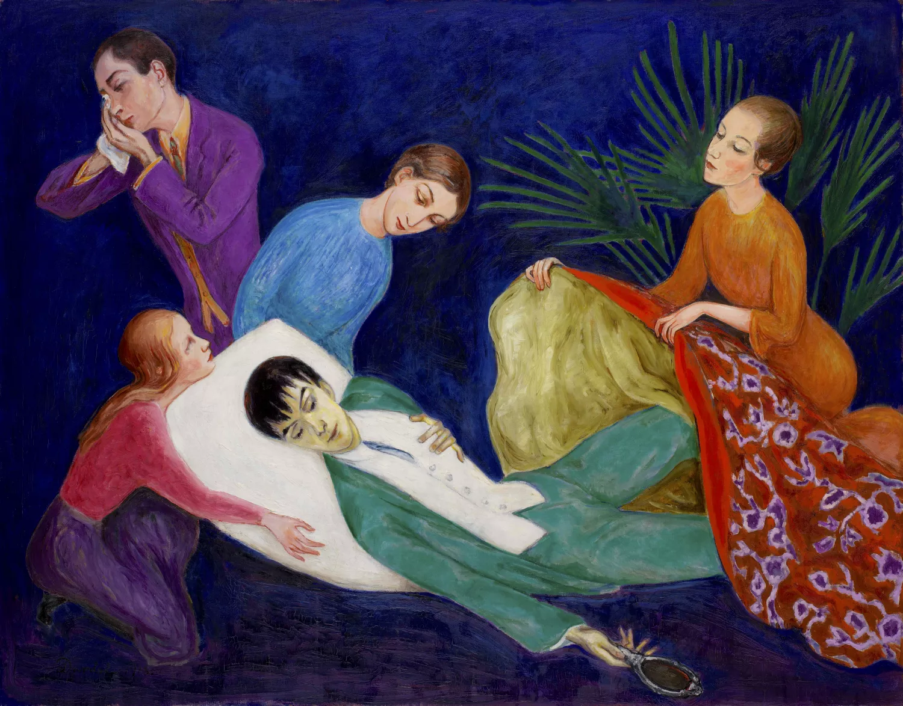

A lo largo de su vida, Van Gogh luchó con problemas de salud mental, lo que lo llevó a períodos de angustia emocional y crisis mentales. Sin embargo, durante su corta carrera de aproximadamente una década, produjo una gran cantidad de obras maestras que reflejaban su profunda pasión y emoción.
Su estilo distintivo se caracteriza por pinceladas gruesas y audaces, colores vibrantes y una expresión emocional intensa. Entre sus obras más famosas se encuentran "La noche estrellada", "Los girasoles", "La habitación de Arlés" y "Los comedores de patatas".
A pesar de su genio artístico, Van Gogh no alcanzó el reconocimiento comercial ni el éxito durante su vida. Sufrió financieramente y emocionalmente, dependiendo en gran medida de su hermano Theo, quien fue su apoyo más constante y quien también fue su principal defensor y marchante. Trágicamente, Van Gogh murió a la edad de 37 años por una herida de bala autoinfligida, aunque las circunstancias exactas de su muerte siguen siendo objeto de debate. Su legado, sin embargo, ha perdurado y su obra ha llegado a ser considerada como una de las más importantes y valiosas en la historia del arte occidental, influyendo en generaciones posteriores de artistas y continuando inspirando a millones en todo el mundo.

TIENDA

PRIMEROS PASOS
PRIMEROS PASOS
EL DANDY MORIBUNDO
Vincent Van Gogh
Países Bajos, 1890
Paul Cézzane
Francia, 1895
Paúl Cézzane
Francia, 1893
Vincent Van Gogh
Países Bajos, 1888
Giovanni Segantini
Italia, 1894
Georges Seurat
Francia, 1891
Vincent Van Gogh
Países Bajos, 1890
Paul Cézanne
Francia, 1882
LOS JUGADORES DE CARTAS
CAFÉ NOCTURNO
MALAS MADRES
EL CIRCO
LA IGLESIA DE AUVERS-SUR-OISE
LEDA Y EL CISNE
